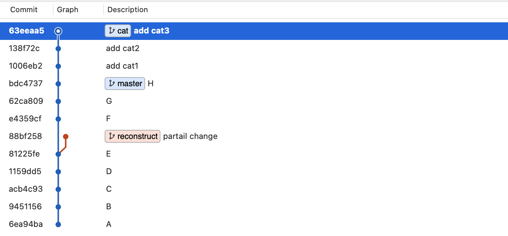
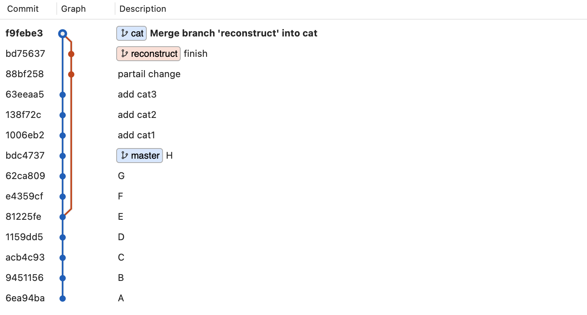
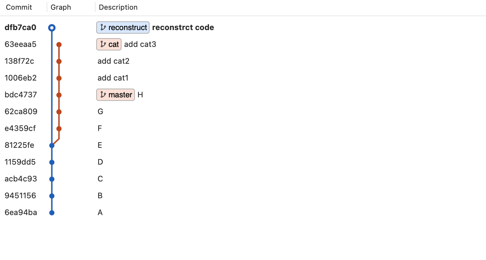
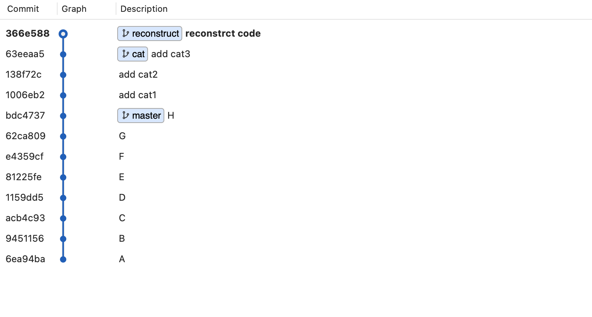

工作時碰到的狀況。
簡述
這是我在工作時碰到的一個問題，就是我習慣在完成目前進度以後回頭去重構一些以前的 code。這件事本身沒什麼問題，有問題的地方是：
有時後重構的部分只完成了一半，所以不想要直接合併到目前的進度裡並推到遠端上。
這時候就會產生這樣的紀錄：

假設我原本在 E 的時候重構了一部分的 code，但當時沒有還提交上去，所以這一段進度就會停留在舊的歷史紀錄上。
接著到我下次完成進度（假設是 cat）繼續重構以後，用 merge 來合併到目前的進度時就會變成這樣子：

老實說就這樣直接推到遠端上也沒什麼問題，只是如果你跟我一樣有一點「潔癖」的話，應該會覺得能用更優雅的方式來處理幾個問題：
reconstruct上的 commit 紀錄應該能合併成一筆（畢竟 partial change 這個 commit 只是當時用來暫存的段落，不然它本身沒有實際意義）reconstruct可以直接用 rebase 接到cat後面，就不會看起來拉了一條很長的線出來（這個完全是喜好問題 XD）
所以來重頭開始吧！
先來改寫 reconstruct 的 commit 紀錄：
1 | git reset HEAD~2 // 收回所有的 commit |

接著用 rebase 把 reconstruct 接到 cat 後面：
1 | git rebase cat reconstruct |
附註：如果看不懂這段指令的話可以去複習 Git Rebase－合併分支
最後就得到了一個乾淨許多的新紀錄：

總而言之，不管想用 merge 還是 rebase 來合併都可以，因為最後併出來的內容都是相同的，主要只是差在歷史紀錄看起來不太一樣，不過我個人還是偏好 rebase 的方式就是了。